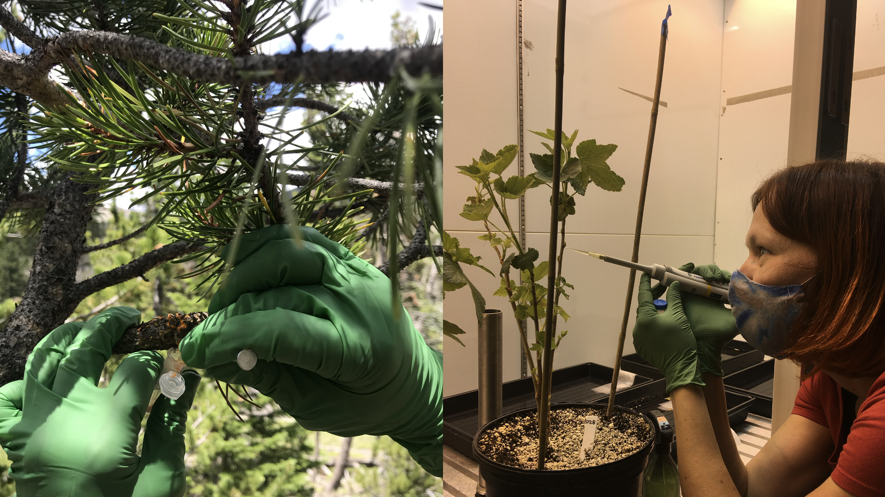

Olga Kozhar PhD
Research Scientist
----
I am biologist interested in ecology, population genetics, and evolution of plant - microbe interactions. I am currently focused on understanding processes leading to the emergence of novel diseases of plants under climate change. For this I use field observations, molecular data, evolutionary theory, and modern computational tools. Being broadly interested in science, I get excited about research initiatives focused on unraveling genetic signatures of organismal adaptation and how these mechanisms can be used to enhance sustainable food production and improve ecosystems health. I also teach a graduate course on Biology and Genetics of Fungal Plant Pathogens at Colorado State University, mentor undergraduate and graduate students, and spend a lot of free time in nature with my dog.
Skills
In vivo
- Field work
- Controlled-environment systems
- Tissue / microbial culture
In vitro

- Tissue / microbial culture
- Phenotyping
- Marker design
Molecular biology
- DNA, RNA isolation
- PCR, qPCR, LAMP
- Marker design
Data analysis
- NGS bioinformatics tools
- Python, R packages
- Statistical analysis
Education
🎓 PhD, Plant Pathology
Washington State University, Pullman, WA
2014-2019
🎓 Master, Plant Biotechnology
National University of Life and Environmental Sciences of Ukraine
2008-2009
🎓 Bachelor, Plant Biotechnology
National University of Life and Environmental Sciences of Ukraine
2004-2008
Publications
Peer reviewed
Kozhar O, Sitz RA, Woyda R, Legg L, Ibarra Caballero JR, Pearse IS, Abdo Z, Stewart JE. 2023. Population genomic analysis of an emerging pathogen Lonsdalea quercina affecting various species of oaks in western North America. Scientific Reports 13: 14852.
Kozhar O, Ibarra Caballero JR, Burns KS, Stewart JE. 2023. Field ready: Development of a rapid LAMP-based colorimetric assay for the causal agent of white pine blister rust, Cronartium ribicola. Forest Pathology 53(3): e12814.
Kozhar O, Kim M-S, Ibarra Caballero JR, Klopfenstein NB, Cannon PG, Stewart JE. 2022. Long evolutionary history of an emerging fungal pathogen of diverse tree species in eastern Asia, Australia and the Pacific Islands. Molecular Ecology 31(7): 2013-2031.
Kozhar O, Peever TL. 2021. Colonization of red raspberry flowers and fruit by Botrytis cinerea under commercial production conditions in northwestern Washington, USA. Plant Pathology 70(2): 336-348.
Kozhar O, Larsen MM, Grunwald NJ, Peever TL. 2020. Fungal evolution in anthropogenic environments: Botrytis cinerea populations infecting small fruit hosts in the Pacific Northwest rapidly adapt to human-induced selection pressures. Applied and Environmental Microbiology 86(9): e02908-19.
Kozhar O, Peever TL. 2018. How does Botrytis cinerea infect red raspberry?. Phytopathology 108(11): 1287-1298.
Research talks
Invited talks
Kozhar O. Emerging threats of forests in changing ecosystems: How genomic data can help to shed light on possible causes of disease emergence. Department of Forest, Rangeland and Fire Sciences. University of Idaho. February 23rd 2022. Moscow, ID, USA.
Conference talks
- Kozhar O et al. Pathogen emergence in changing ecosystems: case study with Phellinus noxius in Eastern Asia, Australia, and the Pacifi c Islands. International Congress of Plant Pathology 2023. August 22nd, 2023. Lyon, France.
- Kozhar O, et al. Emerging tree pathogen Phellinus noxius has a long evolutionary history in Eastern Asia, Australia, and the Pacifi c Islands. Fungal Genetics Conference Fungal22. March 19th, 2022. Pacifi c Grove, CA, USA.
- Kozhar O, et al. Detection and distribution of Cronartium ribicola and Cronartium comandrae hybrids in Colorado and Wyoming forests, USA. American Phytopathological Society Annual Meeting Plant Health 2021. August 2nd, 2021. Online.
- Kozhar O, et al.Population structure and pathways of spread of an emerging tree root pathogen Phellinus noxius in Southeast Asia, Australia, and the Pacifi c Islands. American Phytopathological Society Pacifi c Division Meeting. June 16th, 2021. Online.
- Kozhar O, et al. Insights into population structure of Botrytis cinerea infecting small fruit in the Pacifi c Northwest. American Phytopathological Society Annual Meeting Plant Health 2020. August 12th, 2020. Fort Collins, CO.
- Kozhar O, et al. Populations of Botrytis cinerea infecting small fruit in the Pacifi c Northwest. American Phytopathological Society Pacifi c Division Meeting. June 26th, 2019. Fort Collins, CO.
- Kozhar O, et al. Biology and fungicide resistance of Botrytis cinerea on small fruit in Washington. Annual Berry Disease meeting. February 21st, 2019. Lynden, WA.
- Kozhar O, et al. Dynamics of Botrytis cinerea colonization of red raspberry flowers and fruit. Washington Small Fruit Conference & Ag Show. November 28th, 2018. Lynden, WA.
- Kozhar O, et al. Effects of fungicide applications on Botrytis cinerea colonization of red raspberry at different developmental stages of the host. Annual Berry Disease meeting. February 21st, 2018. Lynden, WA.
- Kozhar O, et al. Do early-season fungicide applications decrease Botrytis fruit rot of red raspberry? Washington Small Fruit Conference. December 15st, 2017. Lynden, WA.
- Kozhar O, et al. How does Botrytis cinerea infect red raspberry? American Phytopathological Society Annual Meeting. July 30th, 2017. San Antonio, TX.
Conference posters
- Kozhar O, et al. Temporal and spatial distribution of interspecifi c hybrid of two tree rust pathogens in subalpine ecosystems of western USA. Plant Health 2023. August 12th, 2023. Denver, CO.
- Kozhar O, et al. Population genomic analysis of Lonsdalea quercina, an emerging pathogen affecting various species of oaks in Colorado and California. Plant Health 2022. August 10th, 2022. Pittsburgh, PA.
- Kozhar O, et al. Botrytis cinerea population structure on small fruit in the Pacifi c Northwest. Washington State University Mount Vernon Research and Extension Center Field Day. July 7th, 2019. Mount Vernon, WA.
- Kozhar O, et al. Insights into Botrytis cinerea population structure on small fruit in the Pacifi c Northwest. 30th Fungal genetics conference. March 15th, 2019. Pacifi c Grove, CA.
- Kozhar O, et al. Colonization dynamics of red raspberry flowers and fruit by Botrytis cinerea. International Congress of Plant Pathology. July 31st, 2018. Boston, MA.
- Kozhar O, et al. What do we know about population structure of Botrytis cinerea infecting small fruit in the Pacific Northwest? Annual Conference of Northwest Center for Small Fruits Research. December 8th, 2016. Kennewick, WA.
- Kozhar O, et al. Phylogenetic analysis of a morphologically distinct morel (Morchella spp) from the US Inland Pacifi c Northwest. 84th Annual Meeting of Mycological Society of America. August 5th, 2016. Berkeley, CA.
- Kozhar O, et al. Biology of Botrytis fruit rot on red raspberry. Washington Small Fruit Conference. December 4th, 2015. Lynden, WA.
Outreach
- Kozhar O, et al. Pests and diseases of forest and residential trees. Earth Day K-12 presentation for Werner Elementary School. April 23d, 2021. Fort Collins, CO.
- Kozhar O, et al. Dynamics of Botrytis cinerea colonization of red raspberry flowers and fruit. Washington Berry Research Review. November 1st, 2018. Mount Vernon, WA.
- Kozhar O, et al. Control of gray mold of berries in the Pacifi c Northwest. Skagit Berry Workshop. March, 23d, 2018. Mount Vernon, WA.
- Kozhar O, et al. Population biology of Botrytis cinerea on small fruit in the Pacifi c Northwest. Berry Fungicide Resistance Working Group. February 22nd, 2017. Lynden, WA.
- Kozhar O, et al. Botrytis fruit rot on red raspberry: are flowers important for the development of gray mold? Washington State University Mount Vernon Research and Extension Center Field Day. July 7th, 2016. Mount Vernon, WA.
- Kozhar O, et al. Biology and ecology of Botrytis fruit rot on red raspberry. Washington State University Mount Vernon Research and Extension Center Field Day. July 5th, 2015. Mount Vernon, WA.
Contact:
email: olga.kozhar@colostate.edu